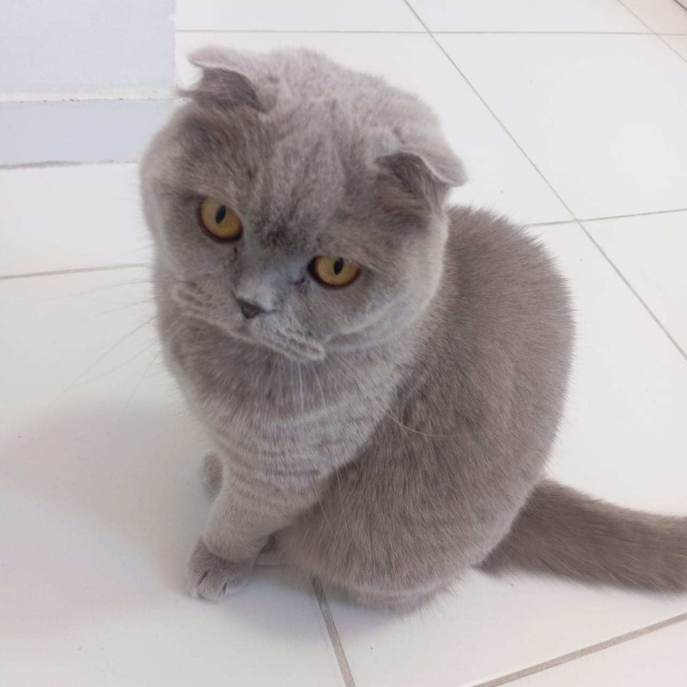

Who I am
Hello! My name is Kaique Rocha, and I am a Systems Analysis and Development student passionate about programming and technology. I enjoy building projects, solving problems, and automating processes through software. I am always looking for opportunities to learn new technologies, improve my skills, and grow as a future backend developer.
My Journey
My interest in technology began when I was a child. I was always curious about how things worked, from computers and the internet to televisions and video games. This curiosity gradually grew into a genuine passion for technology and innovation. In 2020, during the COVID-19 pandemic, I discovered programming and careers in Information Technology while watching videos on YouTube. From that moment on, I realized that software development was the path I wanted to pursue. Since then, I have been dedicated to learning new technologies, improving my programming skills, and building projects that challenge me to grow as a developer.
Education
FATEC
Systems Analysis and Development
Harvard University
CS50 - Introduction to Computer Science
IFSP
Computer Networks Technical Course
My Interest
Career Goals
My goal is to become a backend software developer, continuously improve my programming skills, and contribute to projects that create real value for people and businesses.
Beyond Programming
Outside of programming, I enjoy going to the gym, playing video games, studying philosophy, learning about game development, exploring new technologies, and brainstorming ideas for future projects. I also have a cat who often keeps me company while I study and code. Sometimes, when I'm stuck trying to solve a bug, I jokingly use him as my "rubber duck" to explain my code step by step.
